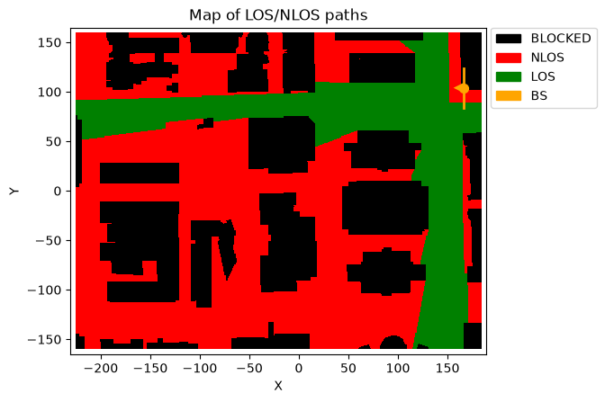
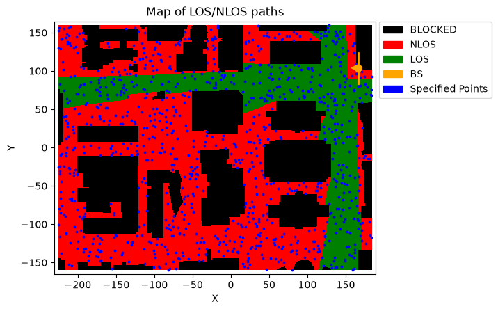
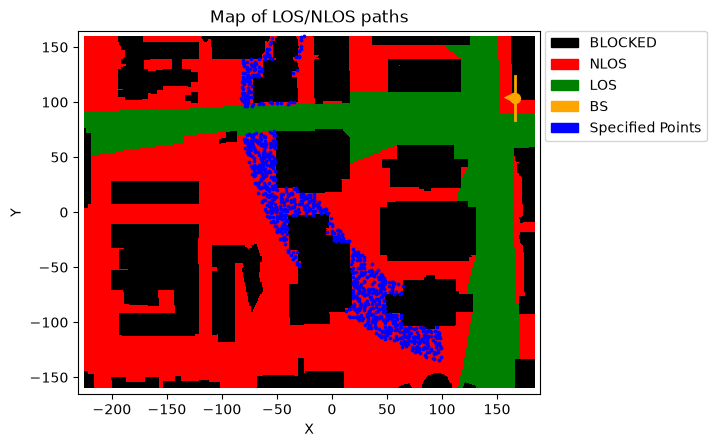

Generating Random Channel Matrices from a DeepMIMO Scenario
This notebook demonstrates how to use NeoRadium’s DeepMimoData.getChanGen function to generate random channel matrices from a DeepMIMO scenario.
The notebook first opens a DeepMIMO scenario and displays a map of the simulation area. It then creates channel generators for two examples:
SISO channel generation with default settings: creates 1,000 single-input single-output channel matrices using the default getChanGen settings.
Filtered MIMO channel generation: creates 1,000 multiple-input multiple-output channel matrices using additional filtering criteria, including LOS/NLOS condition, UE distance, UE position, and custom TX/RX antenna configurations.
The generated channel matrices are collected into NumPy arrays using np.stack, and the resulting array shapes are printed to show the dimensions of the generated channel datasets.
Notes
The user may need to update the
dataFoldervariable based on the location of the DeepMIMO scenario files on their system.The getChanGen function returns a channel generator. The channel matrices are generated when the generator is iterated over.
The selected UE points can be visualized on the DeepMIMO map using drawMap.
Points with total blockage are ignored by the channel generator.
If the requested filtering criteria are too restrictive, the generator may return fewer channels than requested, or no channels at all.
[1]:
import numpy as np
from neoradium import DeepMimoData, BandwidthPart, AntennaPanel
[2]:
# Replace this with the folder on your system where the DeepMIMO scenarios are stored
dataFolder = "/data/RayTracing/DeepMIMO/Scenarios/V4/"
DeepMimoData.setScenariosPath(dataFolder)
# Create a DeepMimoData object
deepMimoData = DeepMimoData("asu_campus_3p5")
deepMimoData.print()
DeepMimoData Properties:
Scenario: asu_campus_3p5
Version: 4.0.0a3
UE Grid: rx_grid
Grid Size: 411 x 321
Base Station: BS (at [166. 104. 22.])
Total Grid Points: 131,931
UE Spacing: [1. 1.]
UE bounds (xyMin, xyMax) [-225.55 -160.17], [184.45 159.83]
UE Height: 1.50
Carrier Frequency: 3.5 GHz
Num. paths (Min, Avg, Max): 0, 6.21, 10
Num. total blockage: 46,774
LOS percentage: 19.71%
[3]:
# Draw a map of the scenario showing line-of-sight (LOS) vs non-line-of-sight (NLOS) communication
# between the UEs and the base station.
ax = deepMimoData.drawMap("LOS-NLOS") # Other map options include "1stPathDelays" and "1stPathPowers"
deepMimoData.drawBsPanel(ax, 180) # TX antenna with a 180-degree bearing angle

Generate 1,000 SISO Channels with Default Settings
In this example, getChanGen is used to create a channel generator for 1,000 SISO channel matrices. Only the number of channels, the bandwidth part, and the random seed are specified, so the remaining parameters use their default values.
The selected UE points are shown on the DeepMIMO map, and the generated channel matrices are stacked into a single NumPy array.
[4]:
bwp = BandwidthPart(numRbs=24, spacing=15) # Create a BandwidthPart object
chanGen = deepMimoData.getChanGen(1000, bwp, seed=1234) # Create a channel generator with default settings
ax = deepMimoData.drawMap("LOS-NLOS", chanGen.pointIdx) # Draw the selected points on the map
deepMimoData.drawBsPanel(ax, 180) # TX antenna with a 180-degree bearing angle
allChannels = np.stack([chan for chan in chanGen]) # Create the channel matrices
print(f"Shape of 'allChannels': {allChannels.shape}")
Shape of 'allChannels': (1000, 14, 288, 1, 1)

Generate 1,000 Filtered MIMO Channels
In this example, getChanGen is used with additional filtering and antenna-configuration parameters to generate MIMO channel matrices.
The selected points are restricted to non-line-of-sight locations within a specified distance range, position range. Custom TX and RX antenna panels are also used to create MIMO channels.
The notebook then displays the selected UE points on the map, checks whether any channels were generated, and stacks the generated channel matrices into a NumPy array.
[5]:
# Create 1000 MIMO channel matrices
chanGen = deepMimoData.getChanGen(1000,
bwp, # Bandwidth part
los = False, # Include only non-line-of-sight channels
minDist = 200, # Minimum distance to the base station, in meters
maxDist = 250, # Maximum distance to the base station, in meters
maxX = 100, # Maximum x-coordinate, in meters
ueSpeed = (10,20), # Use random UE speed between 10 and 20 m/s
ueDir = [0, 270], # Use random UE direction: right or down
txOrientation = [180,0,0], # BS antenna facing the left side of the map
txAntenna = AntennaPanel([2,4], polarization="x"), # 16 TX antennas
rxAntenna = AntennaPanel([1,2], polarization="x"), # 4 RX antennas
seed = 123) # Make the results reproducible
ax = deepMimoData.drawMap("LOS-NLOS", chanGen.pointIdx) # Draw the selected points on the map
deepMimoData.drawBsPanel(ax, 180) # TX antenna with a 180-degree bearing angle
# Create the channel matrices
if len(chanGen) == 0:
raise RuntimeError("No channels were generated. Try relaxing the filter criteria.")
allChannels = np.stack([chan for chan in chanGen])
print(f"Shape of 'allChannels': {allChannels.shape}")
Shape of 'allChannels': (1000, 14, 288, 4, 16)

[ ]: